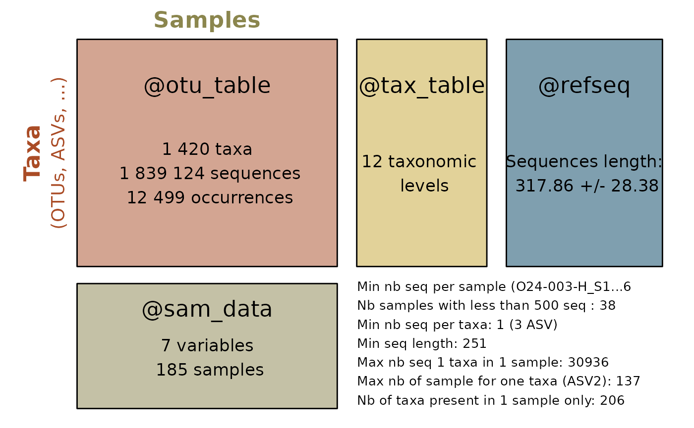
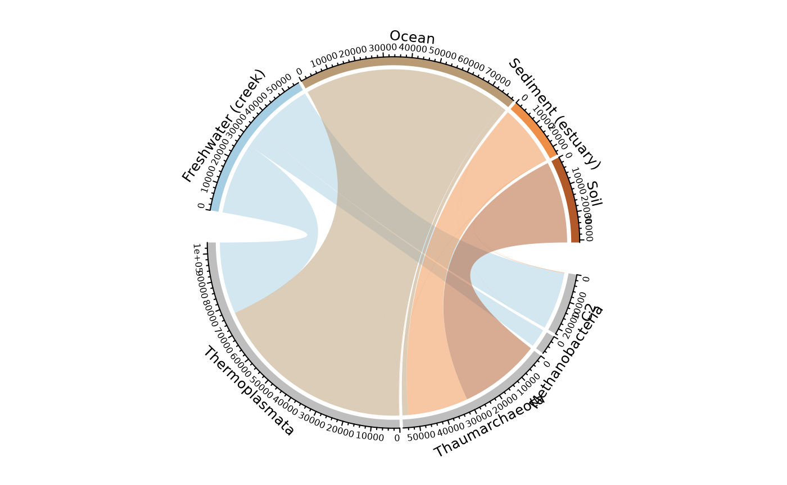

Introduction to MiscMetabar : a R packages to facilitate visualization and reproductibility in metabarcoding analysis
Raison d’être
- Complete R packages dada2 and phyloseq
- Useful visualizations (
biplot_pq,circle_pq) - Facilitate the use of targets
Quick overview
Summarize a physeq object
library("MiscMetabar")
library("phyloseq")
library("magrittr")
data("data_fungi")
summary_plot_pq(data_fungi)
Create an interactive table of the tax_table
data("GlobalPatterns")
tax_datatable(subset_taxa(
GlobalPatterns,
rowSums(GlobalPatterns@otu_table) > 100000
))Sankey diagramme of the tax_table
gp <- subset_taxa(GlobalPatterns, GlobalPatterns@tax_table[, 1] == "Archaea")
sankey_pq(gp, taxa = c(1:5))Circle for visualize distribution of taxa in function of samples variables
circle_pq(gp, "SampleType", taxa = "Class")## Only 4 modalities are plot (44.44%). Use 'min_prop_mod' to plot more samples.## Only 4 taxa are plot (44.44%). Use 'min_prop_tax' to plot more taxa